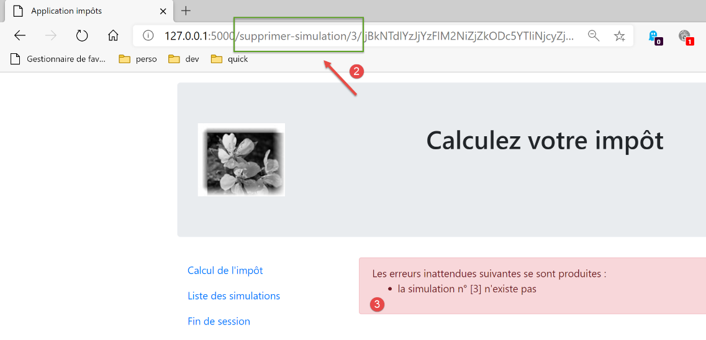
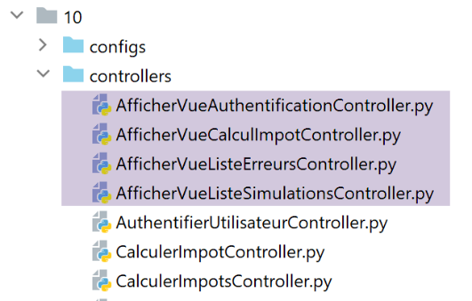
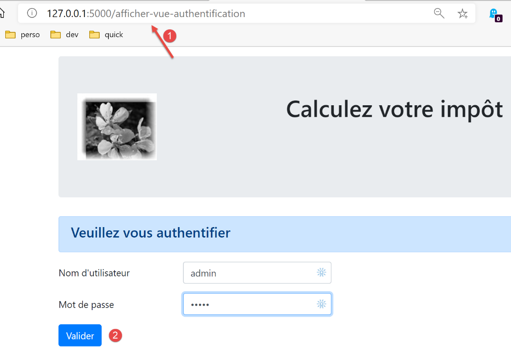
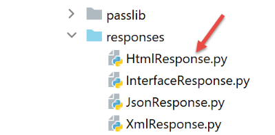

35. Exercício prático: versão 15
35.1. Introdução
Esta versão visa resolver problemas relacionados com a atualização das páginas da aplicação no navegador (F5). Vejamos um exemplo. O utilizador acabou de eliminar a simulação com id=3:

Após a eliminação, o URL no navegador passa a ser [/supprimer-simulation/3/…]. Se o utilizador atualizar a página (F5), o URL [1] é reproduzido novamente. Solicita-se, portanto, novamente a eliminação da simulação com id=3. O resultado é então o seguinte:

Eis outro exemplo. O utilizador acabou de calcular um imposto:
- em [1], o URL [/calculer-impot] que acabou de ser consultado com um POST;
Se o utilizador atualizar a página (F5), recebe uma mensagem de aviso:

A operação de atualização da página repete a última solicitação executada pelo navegador, neste caso um [POST /calculer-impot]. Quando se solicita a repetição de um POST, os navegadores emitem um aviso semelhante ao acima referido. Este aviso informa que está a repetir uma ação já realizada. Suponhamos que este POST tenha efetuado uma compra; seria lamentável repeti-la.
Além disso, vamos limitar a possibilidade de o utilizador introduzir URL no seu navegador. Tomemos, por exemplo, uma das visualizações anteriores:

Os links disponibilizados nesta página são:
- [Liste des simulations] associado a URL [/lister-simulations];
- [Fin de session] associado ao URL e ao [/fin-session];
- [Valider] associado ao URL (não aparece acima) [/calculer-impot];
Quando a vista do cálculo do imposto for apresentada, só aceitaremos as ações [/lister-simulations, /fin-session, /calculer-impot]. Se o utilizador introduzir outra ação no seu navegador, será apresentado um erro. Realizaremos este tipo de verificação nas quatro vistas da aplicação.
Propomos resolver o problema da atualização das páginas da seguinte forma:
- vamos distinguir dois tipos de ações:
- as ações ADS (Ação «Do Something»), que alteram o estado da aplicação. As ações ADS têm, geralmente, parâmetros no URL ou no corpo do pedido;
- as ações ASV (Ação Show View) que apresentam uma vista sem alterar o estado da aplicação. Haverá tantas ações ASV quantas forem as vistas V. As ações ASV não têm quaisquer parâmetros;
- as ações ADS, até agora, eram executadas e terminavam com a exibição de uma vista V após terem preparado o modelo M da mesma. A partir de agora, irão colocar o modelo M da vista na sessão e solicitar ao navegador que redirecione para a ação ASV, responsável por apresentar a vista V;
- as vistas V só serão apresentadas após a conclusão de uma ação ASV. Estas irão obter o seu modelo da sessão;
A vantagem deste método é que o navegador exibirá o URL ASV no seu campo de endereço. A atualização da página irá então executar novamente a ação ASV. Esta ação não altera o estado da aplicação e utiliza um modelo da sessão. Assim, a mesma página será exibida novamente sem efeitos colaterais. Por fim, devido aos redirecionamentos, o utilizador só verá as ações URL e ASV no seu navegador e terá a impressão de estar a navegar de página em página;
35.2. Implementação

A pasta [impots/http-servers/10] é obtida inicialmente através da cópia da pasta [impots/http-servers/09]. Em seguida, é modificada.
35.2.1. As novas rotas

Nos dois ficheiros [routes_with_csrftoken] e [routes_without_csrftoken], é necessário criar as quatro rotas das quatro ações ASV que apresentam as quatro vistas. As restantes rotas permanecem inalteradas.
No [routes_with_csrftoken]:
# exibir-vista-cálculo-imposto
@app.route('/afficher-vue-calcul-impot/<string:csrf_token>', methods=['GET'])
def afficher_vue_calcul_impot(csrf_token: str) -> tuple:
# é executado o controlador associado à ação
return front_controller()
# exibir-vista-autenticação
@app.route('/afficher-vue-authentification/<string:csrf_token>', methods=['GET'])
def afficher_vue_authentification(csrf_token: str) -> tuple:
# executa-se o controlador associado à ação
return front_controller()
# exibir-vista-lista-simulações
@app.route('/afficher-vue-liste-simulations/<string:csrf_token>', methods=['GET'])
def afficher_vue_liste_simulations(csrf_token: str) -> tuple:
# é executado o controlador associado à ação
return front_controller()
# exibir-vista-lista_erros
@app.route('/afficher-vue-liste-erreurs/<string:csrf_token>', methods=['GET'])
def afficher_vue_liste_erreurs(csrf_token: str) -> tuple:
# é executado o controlador associado à ação
return front_controller()
Nas linhas 1-23, criámos quatro rotas para as quatro ações ASV:
- [/afficher-vue-authentification], linha 8, apresenta a vista de autenticação;
- [/afficher-vue-calcul-impot], linha 2, apresenta a vista de cálculo do imposto;
- [/afficher-vue-liste-simulations], linha 14, apresenta a vista das simulações;
- [/afficher-vue-liste-erreurs], linha 20, apresenta a vista de erros inesperados;
Faz-se o mesmo no ficheiro [routes_with_csrftoken] relativo às estradas sem portagem:
# rotas ASV -------------------------
# exibir-vista-cálculo-imposto
@app.route('/afficher-vue-calcul-impot', methods=['GET'])
def afficher_vue_calcul_impot() -> tuple:
# é executado o controlador associado à ação
return front_controller()
# exibir-vista-autenticação
@app.route('/afficher-vue-authentification', methods=['GET'])
def afficher_vue_authentification() -> tuple:
# executa-se o controlador associado à ação
return front_controller()
# exibir-vista-lista-simulações
@app.route('/afficher-vue-liste-simulations', methods=['GET'])
def afficher_vue_liste_simulations() -> tuple:
# é executado o controlador associado à ação
return front_controller()
# exibir-vista-lista_erros
@app.route('/afficher-vue-liste-erreurs', methods=['GET'])
def afficher_vue_liste_erreurs() -> tuple:
# executa-se o controlador associado à ação
return front_controller()
35.2.2. Os novos controladores

O controlador [AfficherVueAuthentificationController] executa a ação ASV [/afficher-vue-authentification]:
from flask_api import status
from werkzeug.local import LocalProxy
from InterfaceController import InterfaceController
class AfficherVueAuthentificationController(InterfaceController):
def execute(self, request: LocalProxy, session: LocalProxy, config: dict) -> (dict, int):
# recuperam-se os elementos do caminho
params = request.path.split('/')
action = params[1]
# mudança de vista — basta definir um código de estado
return {"action": action, "état": 1100, "réponse": ""}, status.HTTP_200_OK
Foi referido que as ações ASV não têm parâmetros e não alteram o estado da aplicação. Limita-se a apresentar a vista pretendida, definindo, na linha 14, um código de estado.
O controlador [AfficherVueCalculImpotController] executa a ação ASV [/afficher-vue-calcul-impot]:
from flask_api import status
from werkzeug.local import LocalProxy
from InterfaceController import InterfaceController
class AfficherVueCalculImpotController(InterfaceController):
def execute(self, request: LocalProxy, session: LocalProxy, config: dict) -> (dict, int):
# recuperam-se os elementos do caminho
params = request.path.split('/')
action = params[1]
# mudança de vista — basta definir um código de estado
return {"action": action, "état": 1400, "réponse": ""}, status.HTTP_200_OK
O controlador [AfficherVueListeSimulationsController] executa a ação ASV [/afficher-vue-liste-simulations]:
from flask_api import status
from werkzeug.local import LocalProxy
from InterfaceController import InterfaceController
class AfficherVueListeSimulationsController(InterfaceController):
def execute(self, request: LocalProxy, session: LocalProxy, config: dict) -> (dict, int):
# recuperam-se os elementos do caminho
params = request.path.split('/')
action = params[1]
# mudança de vista — basta definir um código de estado
return {"action": action, "état": 1200, "réponse": ""}, status.HTTP_200_OK
O controlador [AfficherVueListeErreursController] executa a ação ASV [/afficher-vue-liste-erreurs]:
from flask_api import status
from werkzeug.local import LocalProxy
from InterfaceController import InterfaceController
class AfficherVueListeErreursController(InterfaceController):
def execute(self, request: LocalProxy, session: LocalProxy, config: dict) -> (dict, int):
# recuperam-se os elementos do caminho
params = request.path.split('/')
action = params[1]
# mudança de vista — basta definir um código de estado
return {"action": action, "état": 1300, "réponse": ""}, status.HTTP_200_OK
Resumamos os códigos de estado:
- o código 1100 deve apresentar a vista de autenticação;
- o código 1400 deve apresentar a vista de cálculo do imposto;
- o código 1200 deve apresentar a vista das simulações;
- o código 1300 deve apresentar a vista de erros inesperados;
35.2.3. A nova configuração MVC

Como se estava a tornar demasiado grande, a configuração MVC foi dividida em quatro ficheiros:
- [controllers]: a lista de controladores C da aplicação MVC;
- [ads_actions]: lista as ações ADS (Ação «Do Something»);
- [asv_actions]: lista as ações ASV (Ação «Show View»);
- [responses]: lista as classes das respostas HTTP da aplicação;
Comecemos pelo mais simples, o ficheiro de respostas HTTP [responses]:
def configure(config: dict) -> dict:
# configuração da aplicação MVC
# as respostas HTTP
from HtmlResponse import HtmlResponse
from JsonResponse import JsonResponse
from XmlResponse import XmlResponse
# os diferentes tipos de resposta (json, xml, html)
responses = {
"json": JsonResponse(),
"html": HtmlResponse(),
"xml": XmlResponse()
}
# gerar o dicionário de respostas HTTP
return {
# respostas HTTP
"responses": responses,
}
Sem surpresas.
O ficheiro [controllers] dos controladores também não traz surpresas. Foram simplesmente adicionados os novos controladores das ações ASV.
def configure(config: dict) -> dict:
# configuração da aplicação MVC
# o controlador principal
from MainController import MainController
# os controladores de ações ADS
from AuthentifierUtilisateurController import AuthentifierUtilisateurController
from CalculerImpotController import CalculerImpotController
from CalculerImpotsController import CalculerImpotsController
from FinSessionController import FinSessionController
from GetAdminDataController import GetAdminDataController
from InitSessionController import InitSessionController
from ListerSimulationsController import ListerSimulationsController
from SupprimerSimulationController import SupprimerSimulationController
from AfficherCalculImpotController import AfficherCalculImpotController
# os controladores de ações ASV
from AfficherVueCalculImpotController import AfficherVueCalculImpotController
from AfficherVueAuthentificationController import AfficherVueAuthentificationController
from AfficherVueListeErreursController import AfficherVueListeErreursController
from AfficherVueListeSimulationsController import AfficherVueListeSimulationsController
# ações autorizadas e os seus controladores
controllers = {
# inicialização de uma sessão de cálculo
"init-session": InitSessionController(),
# autenticação de um utilizador
"authentifier-utilisateur": AuthentifierUtilisateurController(),
# ligação para a visualização do cálculo do imposto
"afficher-calcul-impot": AfficherCalculImpotController(),
# cálculo do imposto no modo individual
"calculer-impot": CalculerImpotController(),
# cálculo do imposto em modo de lotes
"calculer-impots": CalculerImpotsController(),
# lista de simulações
"lister-simulations": ListerSimulationsController(),
# eliminação de uma simulação
"supprimer-simulation": SupprimerSimulationController(),
# fim da sessão de cálculo
"fin-session": FinSessionController(),
# obtenção de dados da administração fiscal
"get-admindata": GetAdminDataController(),
# controlador principal
"main-controller": MainController(),
# exibição da vista de autenticação
"afficher-vue-authentification": AfficherVueAuthentificationController(),
# exibição da vista de cálculo do imposto
"afficher-vue-calcul-impot": AfficherVueCalculImpotController(),
# exibição da vista de simulações
"afficher-vue-liste-simulations": AfficherVueListeSimulationsController(),
# exibição da vista de erros
"afficher-vue-liste-erreurs": AfficherVueListeErreursController()
}
# configurar os controladores
return {
# controladores
"controllers": controllers,
}
A configuração [asv_actions] das ações ASV é a seguinte:
def configure(config: dict) -> dict:
# configuração da aplicação MVC
# as vistas HTML e os seus modelos dependem do estado devolvido pelo controlador
# ações ASV (Ação «Mostrar vista»)
asv = [
{
# vista de autenticação
"états": [
1100, # /exibir-vista-de-autenticação
],
"view_name": "views/vue-authentification.html",
},
{
# vista do cálculo do imposto
"états": [
1400, # /exibir-vista-cálculo-imposto
],
"view_name": "views/vue-calcul-impot.html",
},
{
# visualização da lista de simulações
"états": [
1200, # /exibir-vista-lista-simulações
],
"view_name": "views/vue-liste-simulations.html",
},
{
# visualização da lista de erros
"états": [
1300, # /exibir-vista-lista-erros
],
"view_name": "views/vue-erreurs.html",
},
]
# a configuração é definida como ASV
return {
# vistas e modelos
"asv": asv,
}
- O ficheiro [asv_actions] reúne as quatro novas ações, cujo funcionamento recordamos:
- não têm quaisquer parâmetros;
- exibem uma vista específica cujo modelo está na sessão;
- a lista [asv], nas linhas 6 a 35, associa uma vista a cada ação ASV;
O ficheiro [ads_actions] reúne as ações ADS:
def configure(config: dict) -> dict:
# configuração da aplicação MVC
# os modelos das vistas
from ModelForAuthentificationView import ModelForAuthentificationView
from ModelForCalculImpotView import ModelForCalculImpotView
from ModelForErreursView import ModelForErreursView
from ModelForListeSimulationsView import ModelForListeSimulationsView
# ações ADS (Ação «Do Something»)
ads = [
{
"états": [
400, # /fim de sessão bem-sucedida
],
# redirecionamento para a ação ADS
"to": "/init-session/html",
},
{
"états": [
700, # /iniciar-sessão - sucesso
201, # /autenticar-utilizador falha
],
# redirecionamento para a ação ASV
"to": "/afficher-vue-authentification",
# modelo da próxima vista
"model_for_view": ModelForAuthentificationView()
},
{
"états": [
200, # /autenticar-utilizador bem-sucedido
300, # /calcular-imposto bem-sucedido
301, # /calcular-imposto falha
800, # /exibir-cálculo-imposto link
],
# redirecionamento para a ação ASV
"to": "/afficher-vue-calcul-impot",
# modelo da vista seguinte
"model_for_view": ModelForCalculImpotView()
},
{
"états": [
500, # /listar-simulações bem-sucedidas
600, # /eliminar-simulação bem-sucedida
],
# redirecionamento para a ação ASV
"to": "/afficher-vue-liste-simulations",
# modelo da vista seguinte
"model_for_view": ModelForListeSimulationsView()
},
]
# visualização de erros inesperados
view_erreurs = {
# redirecionamento para a ação ASV
"to": "/afficher-vue-liste-erreurs",
# modelo da vista seguinte
"model_for_view": ModelForErreursView()
}
# a configuração é apresentada MVC
return {
# ações ADS
"ads": ads,
# a vista de erros inesperados
"view_erreurs": view_erreurs,
}
- linhas 11-51: a lista de ações ADS (Ação «Do Something»). Encontram-se todas as ações das versões anteriores. No entanto, o seu funcionamento mudou:
- não apresentam uma vista V. Apenas preparam o modelo M dessa vista V;
- solicitam a exibição da vista V através de um redirecionamento para a ação ASV associada à vista V;
- nem todas as ações ADS conduzem a um redirecionamento para uma ação ASV: nas linhas 12-18, a ação ADS [/fin-session] conduz a um redirecionamento para a ação ADS [/init-session/html]. Para distinguir os redirecionamentos ADS -> ADS e ADS -> ASV, pode-se recorrer ao modelo [model_for_view]. Este modelo não existe para os redirecionamentos ADS -> ADS;
O ficheiro [main/config], que reúne todas as configurações, evolui da seguinte forma:
def configure(config: dict) -> dict:
# configuração do syspath
import syspath
config['syspath'] = syspath.configure(config)
# configuração da aplicação
import parameters
config['parameters'] = parameters.configure(config)
# configuração da base de dados
import database
config["database"] = database.configure(config)
# instanciação das camadas da aplicação
import layers
config['layers'] = layers.configure(config)
# configuração da camada MVC
config['mvc'] = {}
# configuração dos controladores da camada [web]
import controllers
config['mvc'].update(controllers.configure(config))
# ações ASV (Ação Mostrar Vista)
import asv_actions
config['mvc'].update(asv_actions.configure(config))
# ações ADS (Ação «Do Something»)
import ads_actions
config['mvc'].update(ads_actions.configure(config))
# configuração das respostas HTTP
import responses
config['mvc'].update(responses.configure(config))
# aplicamos a configuração
return config
35.2.4. Os novos modelos

Os modelos irão gerar novas informações. Tomemos, por exemplo, o modelo da vista de autenticação:
from flask import Request
from werkzeug.local import LocalProxy
from AbstractBaseModelForView import AbstractBaseModelForView
class ModelForAuthentificationView(AbstractBaseModelForView):
def get_model_for_view(self, request: Request, session: LocalProxy, config: dict, résultat: dict) -> dict:
# encapsulamos os dados da página no modelo
modèle = {}
…
# token CSRF
modèle['csrf_token'] = super().get_csrftoken(config)
# ações possíveis a partir da vista
modèle['actions_possibles'] = ["afficher-vue-authentification", "authentifier-utilisateur"]
# retornamos o modelo
return modèle
- A novidade está na linha 17: cada modelo irá gerar uma lista de ações possíveis quando a vista V, da qual é o modelo M, for apresentada. Para conhecer essas ações, é necessário voltar à vista V. No caso da vista de autenticação:

- vemos que a vista de autenticação oferece apenas uma ação, a do botão [Valider]. Esta ação é [/authentifier-utilisateur];
Escrevemos:
# ações possíveis a partir da vista
modèle['actions_possibles'] = ["afficher-vue-authentification", "authentifier-utilisateur"]
Na vista acima, verifica-se que, se o utilizador atualizar a vista, a ação [1] [/afficher-vue-authentification] será executada novamente. Por isso, é necessário que seja autorizada. Poderíamos não a ter autorizado, caso em que o utilizador teria recebido um erro sempre que recarregasse a página. Considerámos que isso não era desejável.
As ações possíveis são colocadas no modelo da vista. Sabemos que este modelo será guardado na sessão.
Fazemos isto para cada uma das quatro vistas. As ações possíveis são, então, as seguintes:
Vista de autenticação
modèle['actions_possibles'] = ["afficher-vue-authentification", "authentifier-utilisateur"]
Vista de cálculo do imposto
# ações possíveis a partir da vista
modèle['actions_possibles'] = ["afficher-vue-calcul-impot", "calculer-impot", "lister-simulations","fin-session"]
Visão da lista de simulações
# ações possíveis a partir da vista
actions_possibles = ["afficher-vue-liste-simulations", "afficher-calcul-impot", "fin-session"]
if len(modèle['simulations']) != 0:
actions_possibles.append("supprimer-simulation")
modèle['actions_possibles'] = actions_possibles
Visualização da lista de erros
# ações possíveis a partir da vista
modèle['actions_possibles'] = ["afficher-vue-liste-erreurs", "afficher-calcul-impot", "lister-simulations", "fin-session"]
35.2.5. O novo controlador principal

O controlador [MainController] sofre algumas alterações:
# importação de dependências
import threading
import time
from random import randint
from flask_api import status
from flask_wtf.csrf import generate_csrf, validate_csrf
from werkzeug.local import LocalProxy
from wtforms import ValidationError
from InterfaceController import InterfaceController
from Logger import Logger
from SendAdminMail import SendAdminMail
def send_adminmail(config: dict, message: str):
# enviar um e-mail ao administrador da aplicação
config_mail = config['parameters']['adminMail']
config_mail["logger"] = config['logger']
SendAdminMail.send(config_mail, message)
# controlador principal da aplicação
class MainController(InterfaceController):
def execute(self, request: LocalProxy, session: LocalProxy, config: dict) -> (dict, int):
# processa-se o pedido
type_response1 = None
logger = None
try:
# recuperam-se os elementos do caminho
params = request.path.split('/')
# a ação é o primeiro elemento
action = params[1]
# registar
logger = Logger(config['parameters']['logsFilename'])
…
# a ação /exibir-vista-lista-erros é específica
# não se faz qualquer verificação, caso contrário corre-se o risco de entrar num ciclo infinito de redirecionamentos
erreur = False
if action != "afficher-vue-liste-erreurs":
# se houver erro, [resultado] é o resultado a enviar ao cliente
(erreur, résultat, type_response1) = MainController.check_action(params, session, config)
# Se não houver erro, a ação é executada
if not erreur:
# executa-se o controlador associado à ação
controller = config['mvc']['controllers'][action]
résultat, status_code = controller.execute(request, session, config)
except BaseException as exception:
# exceções (inesperadas)
résultat = {"action": action, "état": 131, "réponse": [f"{exception}"]}
erreur = True
finally:
pass
# erro de execução
if erreur:
# pedido inválido
status_code = status.HTTP_400_BAD_REQUEST
if config['parameters']['with_csrftoken']:
# adiciona-se o csrf_token ao resultado
résultat['csrf_token'] = generate_csrf()
….
# envia-se a resposta HTTP
return response, status_code
@staticmethod
def check_action(params: list, session: LocalProxy, config: dict) -> (bool, dict, str):
…
# resultado do método
return erreur, résultat, type_response1
- linhas 39-44: são efetuadas as primeiras verificações na ação. Voltaremos a este ponto. O método estático [MainController.check_action] devolve um tuplo de três elementos:
- [erreur]: True se tiver sido detetado um erro, False caso contrário;
- [résultat]: um resultado de erro se (erro == True), None caso contrário;
- [type_response1]: o tipo (json, xml, html, None) da sessão, tipo encontrado na sessão;
- linha 39: não é efetuada qualquer verificação se a ação for a ação ASV [afficher-vue-liste-erreurs], que irá apresentar a lista de erros. Com efeito, se fosse detetado um erro durante esta ação, seríamos redirecionados novamente para a ação [/afficher-vue-liste-erreurs] e entraríamos num ciclo infinito de redirecionamentos;
- O método estático [check_action] é o seguinte:
@staticmethod
def check_action(params: list, session: LocalProxy, config: dict) -> (bool, dict, str):
# recuperamos a ação em curso
action = params[1]
# sem erros nem resultados iniciais
erreur = False
résultat = None
# o tipo de sessão deve ser conhecido antes de determinadas ações ADS
type_response1 = session.get('typeResponse')
if type_response1 is None and action != "init-session":
# regista-se o erro
résultat = {"action": action, "état": 101,
"réponse": ["pas de session en cours. Commencer par action [init-session]"]}
erreur = True
# para determinadas ações ADS é necessário estar autenticado
user = session.get('user')
if user is None and action not in ["init-session",
"authentifier-utilisateur",
"afficher-vue-authentification"]:
# observa-se o erro
résultat = {"action": action, "état": 101,
"réponse": [f"action [{action}] demandée par utilisateur non authentifié"]}
erreur = True
# a partir de uma vista, apenas algumas ações são possíveis
if not erreur and action != "init-session":
# por enquanto, não há ações possíveis
actions_possibles = None
# recupera-se o modelo da futura vista na sessão, caso exista
modèle = session.get('modèle')
# se tiver sido encontrado um modelo, recuperam-se as suas ações possíveis
if modèle:
actions_possibles = modèle.get('actions_possibles')
# se houver uma lista de ações possíveis, verifica-se se a ação em curso faz parte dessa lista
if actions_possibles and action not in actions_possibles:
# regista-se o erro
résultat = {"action": action, "état": 151,
"réponse": [f"action [{action}] incorrecte dans l'environnement actuel"]}
erreur = True
# erro?
if not erreur and config['parameters']['with_csrftoken']:
# verifica-se a validade do token CSRF
# o csrf_token é o último elemento do caminho
csrf_token = params.pop()
try:
# será lançada uma exceção se o csrf_token não for válido
validate_csrf(csrf_token)
except ValidationError as exception:
# token CSRF inválido
résultat = {"action": action, "état": 121, "réponse": [f"{exception}"]}
# regista-se o erro
erreur = True
# resultado do método
return erreur, résultat, type_response1
- linha 2: o método [check_action] efetua várias verificações sobre a validade da ação em curso;
- linhas 6-26, 45-57: as versões anteriores já realizavam estas verificações;
- linhas 28-42: é adicionada uma nova verificação. Verifica-se se a ação em curso é possível no estado atual da aplicação. Se a ação em curso não for possível, é gerado um estado 151 (linha 40), o que garante que a ação atual será redirecionada para a vista de erros inesperados;
35.2.6. A nova resposta HTML

As alterações em curso dizem respeito apenas às sessões HTML. As sessões jSON ou XML não são afetadas. A classe [HtmlResponse] sofre as seguintes alterações:
# dependências
from flask import make_response, redirect, render_template
from flask.wrappers import Response
from flask_api import status
from flask_wtf.csrf import generate_csrf
from werkzeug.local import LocalProxy
from InterfaceResponse import InterfaceResponse
class HtmlResponse(InterfaceResponse):
def build_http_response(self, request: LocalProxy, session: LocalProxy, config: dict, status_code: int,
résultat: dict) -> (Response, int):
# a resposta HTML depende do código de estado devolvido pelo controlador
état = résultat["état"]
# verifica-se se o estado foi gerado por uma ação ASV
# nesse caso, é necessário apresentar uma vista
asv_configs = config['mvc']["asv"]
trouvé = False
i = 0
# percorre-se a lista de vistas
nb_views = len(asv_configs)
while not trouvé and i < nb_views:
# vista n.º i
asv_config = asv_configs[i]
# relatórios associados à vista n.º i
états = asv_config["états"]
# o relatório procurado encontra-se entre os relatórios associados à vista n.º i
if état in états:
trouvé = True
else:
# próxima vista
i += 1
# Encontrado?
if trouvé:
# trata-se de uma ação ASV — é necessário apresentar uma vista cujo modelo já se encontra na sessão
# gera-se o código HTML da resposta
html = render_template(asv_config["view_name"], modèle=session['modèle'])
# construi-se a resposta HTTP
response = make_response(html)
response.headers['Content-Type'] = 'text/html; charset=utf-8'
# retorna-se o resultado
return response, status_code
# não encontrado — trata-se de um código de estado de uma ação ADS
# esta ação será seguida de um redirecionamento
redirected = False
for ads in config['mvc']['ads']:
# estados que requerem um redirecionamento
états = ads["états"]
if état in états:
# existe redirecionamento
redirected = True
break
# dicionário de redirecionamento para o caso de erros inesperados
if not redirected:
ads = config['mvc']['view_erreurs']
# trata-se de um redirecionamento para uma ação ASD ou ASV?
# se existir um modelo, trata-se de um redirecionamento para uma ação ASV
# neste caso, é necessário calcular o modelo da vista V que será apresentada pela ação ASV
model_for_view = ads.get("model_for_view")
if model_for_view:
# cálculo do modelo da vista seguinte
modèle = model_for_view.get_model_for_view(request, session, config, résultat)
# o modelo é carregado para a vista seguinte
session['modèle'] = modèle
# agora é necessário gerar o URL de redirecionamento, sem esquecer o token CSRF, caso seja solicitado
if config['parameters']['with_csrftoken']:
csrf_token = f"/{generate_csrf()}"
else:
csrf_token = ""
# resposta de redirecionamento
return redirect(f"{ads['to']}{csrf_token}"), status.HTTP_302_FOUND
- linhas 18-35: verifica-se se o estado produzido pela última ação executada corresponde ao de uma ação ASV;
- linhas 36-46: se sim, a vista V associada à ação ASV é apresentada utilizando como modelo o modelo encontrado na sessão associado à chave [‘modèle’];
- linhas 48-60: quando se chega a este ponto, sabe-se que o estado produzido pela última ação executada corresponde a uma ação ADS. Esta irá, então, provocar um redirecionamento. Procura-se no ficheiro de configuração a definição desse redirecionamento;
- linha 62: quando se chega aqui, tem-se a configuração do redirecionamento a efetuar. Existem dois casos:
- trata-se de um redirecionamento para outra ação ADS. Nesse caso, não há nenhum modelo de vista a calcular;
- trata-se de um redirecionamento para uma ação ASV. Nesse caso, há um modelo de vista a calcular (linhas 67-68). Este modelo é, em seguida, colocado na sessão (linha 70);
- linhas 72-76: calcula-se o URL de redirecionamento;
- linhas 78-79: envia-se a resposta de redirecionamento ao cliente;
35.3. Testes
Faça os seguintes testes com um navegador:
- utilize a aplicação normalmente. Verifique se os únicos URL apresentados pelo navegador são URL, ASV e [/afficher-vue-nom_de_la_vue];
- atualize as páginas (F5) e verifique se a mesma página é novamente apresentada. Não há qualquer efeito colateral;
Além disso, utilize o cliente [impots/http-clients/09]. Como as alterações efetuadas dizem respeito apenas às sessões HTML, os clientes [main, main2, main3, Test1HttpClientDaoWithSession, Test2HttpClientDaoWithSession] devem continuar a funcionar.
Agora, vejamos um caso em que a ação não é possível. É apresentada a seguinte vista:

Em vez de [1], introduzimos URL [/supprimer-simulation/1]. A ação [/supprimer-simulation] não faz parte das ações propostas pela vista, que são as ações 1 a 4. Por conseguinte, será recusada. A resposta do servidor é a seguinte: